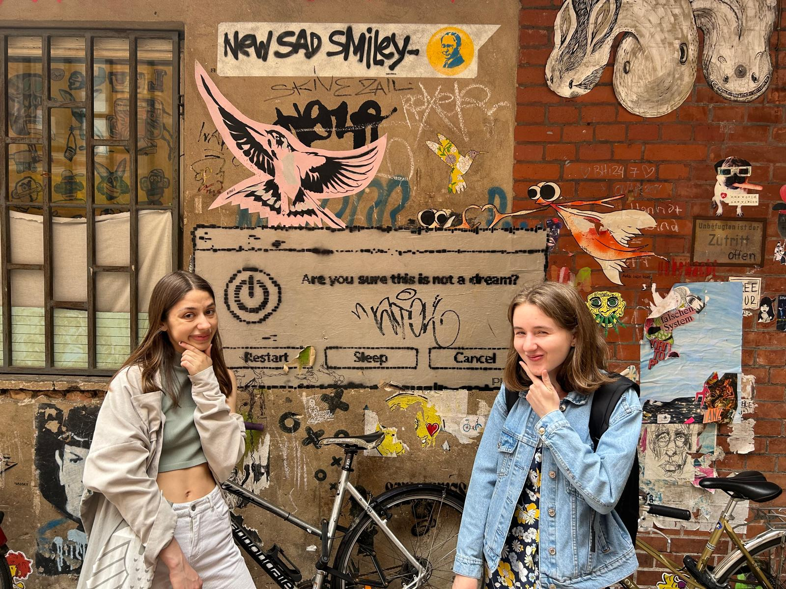

Publications
Steinbach, H., Stede, M., & Abels, C. M. (forthcoming, 2026). “Modeling Parliamentary Interaction in the German Bundestag via Interjections and Policy Topics.” In Proceedings of the 6th Workshop on Computational Linguistics for the Political and Social Sciences (CPSS), KONVENS 2026.
Accepted paper based on my Master’s thesis
Steinbach, H. M., Yüzüncüoglu, I., Rilla, R., & Stede, M. (2025). “Heroes, Villains, and Victims: Character Narratives in the WPS Agenda of the UNSC.” In Proceedings of the 5th Workshop on Computational Linguistics for the Political and Social Sciences (CPSS), KONVENS 2025. [Paper]
Analyzed UN Security Council speeches on Women, Peace, and Security (WPS) using topic modeling, clustering, and supervised learning (RoBERTa and LLMs). Revealed gendered framing patterns and released annotated data and code for future research in political discourse analysis
Romero, J., Schaub, T., & Steinbach, H. M. (2025). “Towards Temporal Answer Set Programming with Preferences” (Extended Abstract). TAASP 2025 Workshop on Trends and Applications of Answer Set Programming. [Abstract]
Selected Research Projects
Coalition Alignment and Conflict in the German Parliament
Analyzing parliamentary interjections to study coalition alignment and tension in Germany’s Traffic Light Coalition using manual annotations and computational text analysis, including supervised topic modeling
Parliamentary Interjections and Political Dynamics
Developed a publicly available NLP pipeline to extract and analyze interjections from German parliamentary protocols, enabling large-scale analysis of gender and party dynamics using rich metadata (e.g., speaker identity, party affiliation, and interjection type)
DreamCatcher: LLM-Based Text Analysis and Web Application
Designed a web application using Llama 3 for automated information extraction from user texts (dreams), integrating NLP pipelines, prompt engineering, and backend development to explore LLM performance in low-resource domains

Authorial Presence in Scientific Writing
Analyzed first-person pronouns and co-occurring lexical verbs in historical research articles to examine changes in authorial self-mention and scientific identity across disciplines and over time
My projects and code are available on GitHub ↗.